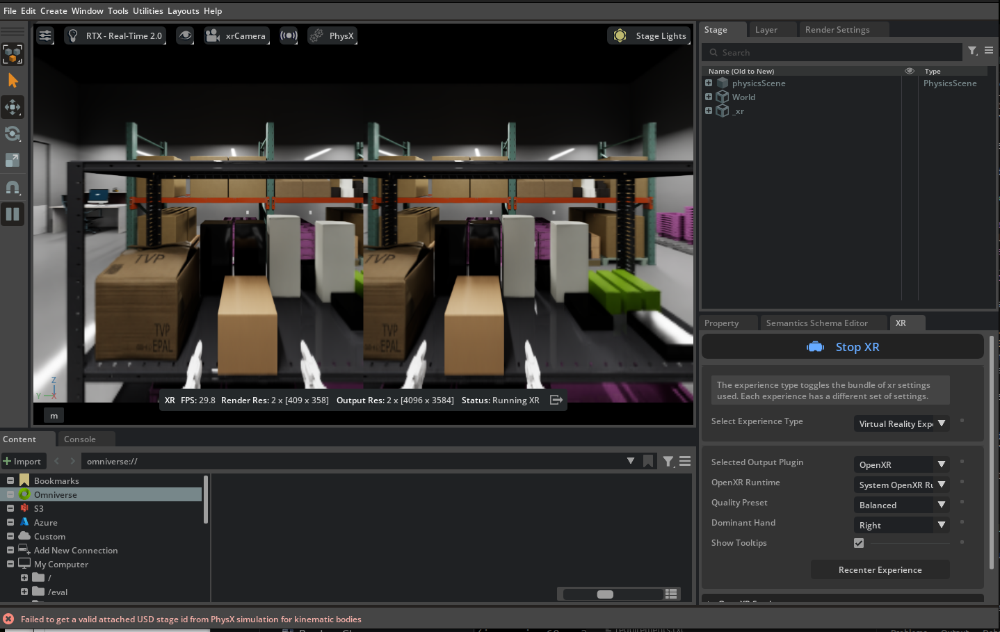
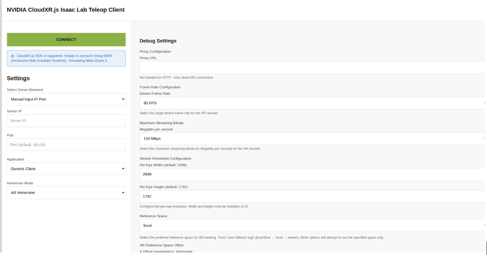

Teleoperation Data Collection#
This workflow covers collecting demonstrations for the G1 loco-manipulation task using Meta Quest 3 supported by NVIDIA CloudXR.
This workflow requires several components to run:
NVIDIA CloudXR Runtime: Runs in a Docker container on your workstation and streams the Isaac Lab simulation to a compatible XR device. See the CloudXR Runtime documentation.
Arena Docker container: Runs the Isaac Lab simulation and recording.
CloudXR.js WebServer: Meta Quest 3 and Pico 4 Ultra connect to Isaac Lab via the CloudXR.js WebXR client. See CloudXR.js (Early Access).
Note
You must join the NVIDIA CloudXR Early Access Program to obtain the CloudXR runtime and client:
CloudXR Early Access: Join the NVIDIA CloudXR SDK Early Access Program
Follow the steps in the confirmation email to get access to the CloudXR runtime container and client resources.
Step 1: Start the CloudXR Runtime Container#
Download the CloudXR Runtime Container from NVIDIA NGC. Version 6.0.1 is tested.
docker login nvcr.io docker pull nvcr.io/nvidia/cloudxr-runtime-early-access:6.0.1-webrtc
In a new terminal, start the CloudXR runtime container:
cd submodules/IsaacLab mkdir -p openxr docker run -dit --rm --name cloudxr-runtime \ --user $(id -u):$(id -g) \ --gpus=all \ -e "ACCEPT_EULA=Y" \ --mount type=bind,src=$(pwd)/openxr,dst=/openxr \ --network host \ nvcr.io/nvidia/cloudxr-runtime-early-access:6.0.1-webrtc
Step 2: Start Arena Teleop#
In another terminal, start the Arena Docker container and launch the teleop session to verify the pipeline:
./docker/run_docker.sh
python isaaclab_arena/scripts/imitation_learning/teleop.py \
--enable_pinocchio \
galileo_g1_locomanip_pick_and_place \
--teleop_device openxr
Start the AR/XR session from the AR tab in the application window.
{kind=link}

Arena teleop session with XR running. Stereoscopic view (left) and OpenXR settings in the AR tab (right).#
Step 3: Build and Run the CloudXR.js WebServer#
Download the CloudXR.js with samples, unzip and follow the included guide.
Start the CloudXR.js WebServer:
cd cloudxr-js-early-access_6.0.1-beta/release docker build -t cloudxr-isaac-sample --build-arg EXAMPLE_NAME=isaac . docker run -d --name cloudxr-isaac-sample -p 8080:80 -p 8443:443 cloudxr-isaac-sample
You can test from a local browser at
http://localhost:8080/before connecting the Quest.
{kind=link}

CloudXR.js Isaac Lab Teleop Client. Configure server IP and port, then press Connect. Adjust stream resolution and reference space in Debug Settings if needed.#
Step 4: Setup and Connect from Meta Quest 3#
On the host machine, update the firewall to allow traffic on these ports:
sudo ufw allow 49100/tcp sudo ufw allow 47998/udp
Network: Use a router with Wi-Fi 6 (5 GHz band). Connect the server via Ethernet and the Quest to the same router’s Wi-Fi. See the CloudXR Network Setup guide.
Quest configuration: On the Quest headset, configure insecure origins for HTTP mode (one-time setup):
Open the Meta Quest 3 browser and go to
chrome://flags.Search for
insecure, findunsafely-treat-insecure-origin-as-secure, and set it to Enabled.In the text field, enter your Arena host URL:
http://<server-ip>:8080.Tap outside the text field; a Relaunch button appears. Tap Relaunch to apply.
After relaunch, return to
chrome://flagsand confirm the flag is still enabled and the URL is saved.
Connect: On the Quest, open the browser and go to
http://<server-ip>:8080. In Settings, enter the server IP, then press Connect. You should see the simulation and be able to teleoperate.The browser will prompt for WebXR permissions the first time. Select Allow; the immersive session starts after permission is granted.
Teleoperation Controls:
Left joystick: Move the body forward/backward/left/right.
Right joystick: Squat (down), rotate torso (left/right).
Controllers: Move end-effector (EE) targets for the arms.
Step 5: Record with Quest 3#
Recording: When ready to collect data, run the recording script from the Arena container:
export DATASET_DIR=/datasets/isaaclab_arena/locomanipulation_tutorial mkdir -p $DATASET_DIR # Record demonstrations with OpenXR teleop python isaaclab_arena/scripts/imitation_learning/record_demos.py \ --device cpu \ --enable_pinocchio \ --dataset_file $DATASET_DIR/arena_g1_locomanipulation_dataset_recorded.hdf5 \ --num_demos 10 \ --num_success_steps 2 \ galileo_g1_locomanip_pick_and_place \ --teleop_device openxr
Complete the task for each demo. Reset between demos. The script saves successful runs to the HDF5 file above.
Hint
Suggested sequence for the task:
Align your body with the robot.
Walk forward (left joystick forward).
Grab the box (controllers).
Walk backward (left joystick back).
Turn toward the bin (right joystick).
Walk forward to the bin.
Squat (right joystick down).
Place the box in the bin (controllers).

Step 6: Replay Recorded Demos (Optional)#
To replay the recorded demos:
# Replay from the recorded HDF5 dataset
python isaaclab_arena/scripts/imitation_learning/replay_demos.py \
--device cpu \
--dataset_file $DATASET_DIR/arena_g1_locomanipulation_dataset_recorded.hdf5 \
--enable_pinocchio \
galileo_g1_locomanip_pick_and_place